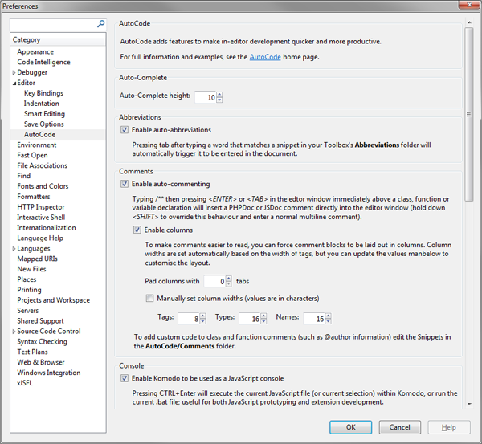
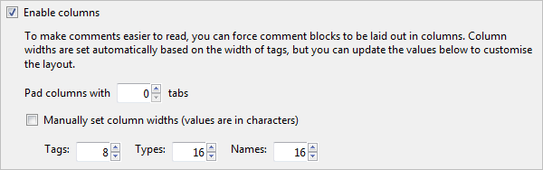
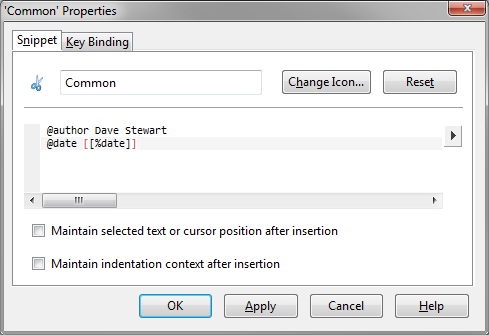
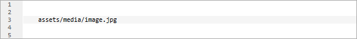
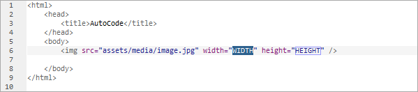
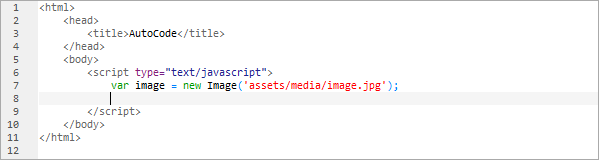
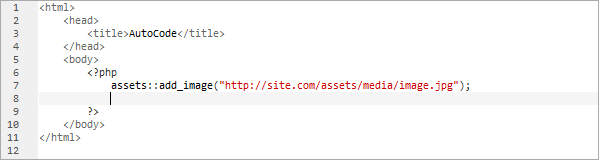
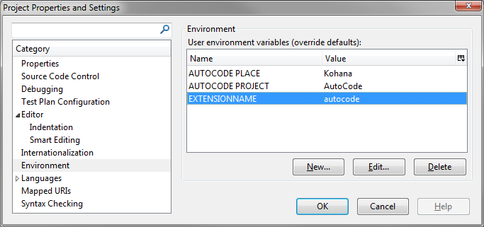
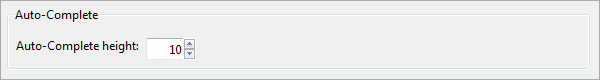

Komodo AutoCode Extension
Intro
Overview
The AutoCode extension adds some extra functionality to Komodo, that makes it easier than ever to write (and test) quality code. Its features include:
- Tab-complete on abbreviations
- DocComment generation
- Places integration
- JavaScript console functionality
- Auto-Complete customisation
Download and intallation
Download AutoCode from the Active State site from here, then install using the following instuctions:
- Make sure Komodo Edit is open
- Browse to your xJSFL/core/install/Komdo/ folder
- Drag the correct .xpi file onto Komodo Edit
- Restart Komodo Edit
Preferences
Ensure that the extension's functionality is enabled by going to Preferences > Editor > AutoCode, and making sure that the relevant checkboxes are checked.
For more information see the section on Komodo installation.
Features
Auto-Abbreviations
Abbreviations are a standard Komodo feature that allow you to enter a single keyword in the editor pane, then expand that keyword into an editable code, with placeholder regions that you tab through to fill in values. It's perhaps easier illustrated with a sequence of images:
Firstly, type a keyword corresponding to an abbreviation name, in this case "for":

Then, press tab (as opposed to the more cumbersome default, CTRL+T) to trigger the abbreviation's template:

The template is inserted into the document, and the first place holder is highlighted in each place in the template that it is used. You can alter it by simply typing, or accept the value and tab to the next placeholder.
AutoCode allows you to use the TAB key to enter abbreviations, making codeing more familiar.
DocComment generation
Komodo uses the JSDoc syntax to document JavaScript code, as well as hint param and return types.
With the Auto-Comment checkbox enabled in the preferences, all you need to do comment a function or method is to type /** just above the function declaration...

...then press tab:

The comment will be completed, and placeholders will be entered, allowing you to tab through the values.
You'll notice that the entries are also nicely formatted into columns. There are more options in the preferences for this, including fixed-width columns, and padding:

To add your own custom text or parameters to class and function comments (such as @author information), locate the relevant Snippets inside AutoCode's own Toolbox...

...then add your own parameters as you wish:

The code therein will be insterted automatically into the appropriate comment types as they are created.
Note that AutoCode also supports PHPDoc for documenting PHP pages.
Places integration
Overview
Places integration is the most powerful feature of AutoCode, as it enables you to ALT+click a file or folder in the Places panel to generate and insert a snippet of code relating to that file, specific to the current language.
This process is completely customisable by the user, through custom Snippets, Project Environment variables, and AutoCode preferences, to give you a high level of control regarding what code is inserted.
At the most basic level, ALT+clicking in the Places panel inserts the relative or absolute path to that file in the current document:
However, if you are in an HTML document, and you have the correct folder and Snippet setup, you could ALT+click an image to quickly in insert an image tag (note the standard tab-placeholders).

Or if in the JavaScript part of the HTML document, you could click on an image file to insert some image-specific JavaScript code:

Or if in a PHP document, you could set up custom PHP code to insert images using your own custom code:

You have complete control per file and per language as to how paths or code is generated, which is explained in the following section.
Code generation specifics
Ultimately, AutoCode Places inserts code into the document as a Snippet. Which Snippet to choose however, depends on various factors as outlined in the following list:
- The current code in the editor window
- The clicked-file's extension
- The document's file extension
- The document's current language.
- Project-specific variables or the project name
- The AutoCode Places preferences
The order of decision-making in order to determine which Snippet to use (or not use) is quite specific, and is outlined below. Note that the order AutoCode assesses the current scenario is as ordered below. The first successful match stops the process, and the Snippet is inserted:
- Unmodified
- Add the unmodified path if:
- There's a document selection
- The caret is between 2 matching quotes
- Add the unmodified path if:
- Editor file-type (override)
- Use the Snippet from the
Places/Defaults/<view ext>files if:- The view's file extension is registered as a default format in AutoCode Preferences, and matches a file name. For example,
- The view is "autocode.manifest"
- "manifest" is registered as a default format in the AutoCode places preferences
- The snippet "Places/Defaults/manifest" exists
- The view's file extension is registered as a default format in AutoCode Preferences, and matches a file name. For example,
- Use the Snippet from the
- Project name or project environment variable (override)
- Use Snippets from
Places/ProjectorPlaces/Customfolders if:- The project environment variable
AUTOCODE PLACEmatches aPlaces/Custom/<folder> - The project environment variable
AUTOCODE PROJECTmatches aPlaces/Projects/<folder> - The project name matches a
Places/Projects/<folder> - The view's current language and the places file extension matches a
Places/<language>/<ext>
- The project environment variable
- Use Snippets from
- View language + inserted file-type combination
- Use the Snippet from
<language>/<file>if:- The view's current language and file group (see Preferences) matches a
<folder>/<language>/<group> - The view's current language and file extension matches a
<folder>/<language>/<ext> - The view's current language is found, and there is a default snippet
<folder>/<language>/default
- The view's current language and file group (see Preferences) matches a
- Use the Snippet from
- Global defaults
- Final defaults
- Fall back to
Places/Defaults/defaultif it exists - Enter the path as-is if it doesn't
- Fall back to
- Final defaults
The system is extremely powerful, but at the same time, hopefully flexible-enough for most developers' needs, as it provides a range of defaults as well as a subtle, granulated system of overrides.
The thing to remember though, is that at the very basic level you need the following Snippet structure in your AutoCode Places folder in order for AutoCode to find the correct Snippet
- Places > Languages > Language > Extension
So for example, in order to insert a snippet for any image types within an HTML document, you would need the following snippet structure:
 The other folders, Custom, Default, and Projects relate to custom locations for snippets outlined in the Code generation specifics section above.
The other folders, Custom, Default, and Projects relate to custom locations for snippets outlined in the Code generation specifics section above.
Snippet variables
So, once the particular Snippet has been identified in relation to the criteria above, you also have a range of variables that can be used to customise the Snippet's output.
The following variables are available to use:
- file - the full filename, including the extension
- filename - the filename only (without the extension)
- fileext - the file extension only
- path - the full path to (and including) the file (as determined by preferences)
- relpath - the relative path to (and including) the file
- abspath - the absolute path to (and including) the file from the project root
- folderpath - the full path to the folder (as determined by preferences)
- relfolderpath - the relative path to the folder
- absfolderpath - the absolute path to the folder from the project root
- uri - the URI to the file
- folderuri - the URI to the folder
- %VAR - any variable you have set in your project's Environment Variables
Variables are inserted into the snippet using the standard Interpolation Shortcuts mechanism, i.e. [[%tabstop:CONTENT]]. This allows you to add the snippets manually as well, should you so wish.
You can use these values in combination with other code, and even other tabstops (including numbered tabstops) to form fairly advanced code insertion.
For example, in the following Snippet, the Project variable EXTENSIONNAME has been used, along with the Places variable abspath:

This would (in the case of the AutoCode extension project) result in the following path being inserted:
chrome://autocode/absolute/path/to/file.ext
Note that a Project Environment variable was also set up. This allows you to customise code per-project, should you wish:

Examine the sample snippets that ship with AutoCode to get an idea, and add your own as you see fit.
JavaScript Console
Enabling the JavaScript console in AutoCode allows you to edit and run JavaScript code directly in Komodo.
With a JavaScript file open (the extension must be .js), you can use the CTRL+Enter shortcut key to evaluate the JavaScript currently in the editor window. (Note that you can also execute Windows .bat files by pressing CTRL+Enter).
If the code is valid, it will execute. If not, an error message will pop up, and Komodo will move the cursor to the line of the error.
The following commands are also available when using the Console, which allow you test values and output in the Command Output panel as you develop:
- trace(value): Traces the value to the command output
- inspect(value): Traces a hierarchical representation of the value to the command output. More info about inspect()'s arguments can be found here.
- clear(): Clears the command output
Below you can see the result of an inspect:

Auto-Complete
The simplest functionality in AutoCode allows you to change the height of the AutoComplete dropdown from the default 5 lines.
